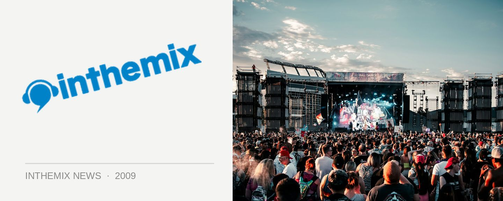

Mark James speaks out on Future Music Festival
“It always has been our plan to build it into a larger show, which has worked really well for us, and to keep the lineup diverse, different and new. And I think we’ve achieved that with the lineup we’ve got this year.” With little more than a month away from the tour kicking off, Future Entertainment head honcho Mark James talks the past, present and future of the Future Music Festival with ITM.
Looking at this year’s tour, the most noticeable difference is the heavier presence of massively popular live acts like N.E.R.D., Basement Jaxx and CSS, alongside DJ talent like Paul Oakenfold, Richie Hawtin and Markus Schulz who’ve been the festival’s bread and butter in earlier incarnations. “It is a strategic sort of thing, it’s the way Future Music Festival is going to move in the next five years,” James told ITM. “Hence us moving to Flemington in Melbourne, with more capability for larger areas, and to have three big main stages as opposed to being pigeonholed at the Myer Music Bowl, which only has the one large stage. It was the way we really wanted to go with this festival, to incorporate a lot more live entertainment and larger areas basically.”
The party’s shift to Flemington Racecourse in Future’s hometown of Melbourne represents the biggest shakeup for the tour this year. “We’re doing Racecourses all over the country now, except for Perth and Adelaide, and they’re all very large spaces with room to move and to expand.” He says there’s potential for venue changes across other states as well to properly accommodate this ‘live and larger’ direction. “Without a doubt, that’s the plan over the next five years. We’ve actually done deals for quite some time with these venues so the idea is to really build it into larger festivals.”
So what’s worth getting excited about with this year’s FMF? “Etienne De Crecy’s cube show is going to be amazing. He’s bringing the whole box and dice. Basement Jaxx’s new stage show is amazing, and Oakenfold will be bringing his custom-built ‘Madonna’ console with him, which is full on,” he laughs, referring to the DJ setup the Perfecto Records star had custom built for his Madonna shows that he’s insisted on bringing along with him.
The Future Music Festival CD, compiled by Mark James with Dan Mangan, will be released through Stomp on February 14th. Stay tuned for ITM’s full-length audio interview as the tour draws near, and check out our Festival Page for more info.